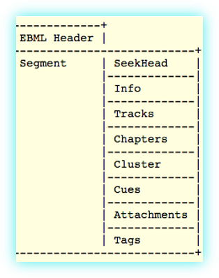

MKV es un formato contenedor, lo que significa que permite embeber múltiples secuencias de archivos en uno solo, usualmente junto con metadatos que las identifican.
MKV hace referencia a una de las posibles extensiones que pueden tener los archivos “Matroska Multimedia Container”, otras posibles extensiones son:
.mk3d
.mka
.mks
Conenido
Puede contener una cantidad ilimitada de pistas de audio, video y subtítulos.
Búsqueda
Cuenta con marcadores y metadatos para la búsqueda dentro del archivo.
Capitulación
Cuenta con entradas que marcan capítulos del contenido.
Metadatos
Contiene una trama de metadatos para la identificación de secciones del archivo.
Ampliación
Al ser de código abierto, es posible ampliarse mediante módulos.
Menús
Cuenta con soporte para menús al estilo de los DVDs.
MKV es un formato construido sobre EBML (Extensible Binary Meta Language), un tipo de archivo formulado como una extensión binaria de XML, y sigue el mismo modelo separando sintaxis y semántica. Esto posibilita que una biblioteca genérica EBML pueda leer cualquier formato que se funde en ella.
Al contar con EBML como base, Matrioska tiene una alta flexibilidad, y admite prácticamente cualquier formato de audio y video.
Video: MPEG-1, MPEG-2, MPEG-4, H.263, H.264, etc.
Audio: Ogg, FLAC, MP3, ACC, etc.
Cada archivo Matroska contiene dos elementos raíz, la cabecera y uno o múltiples segmentos, sin embargo, no es común usar más de un segmento.
